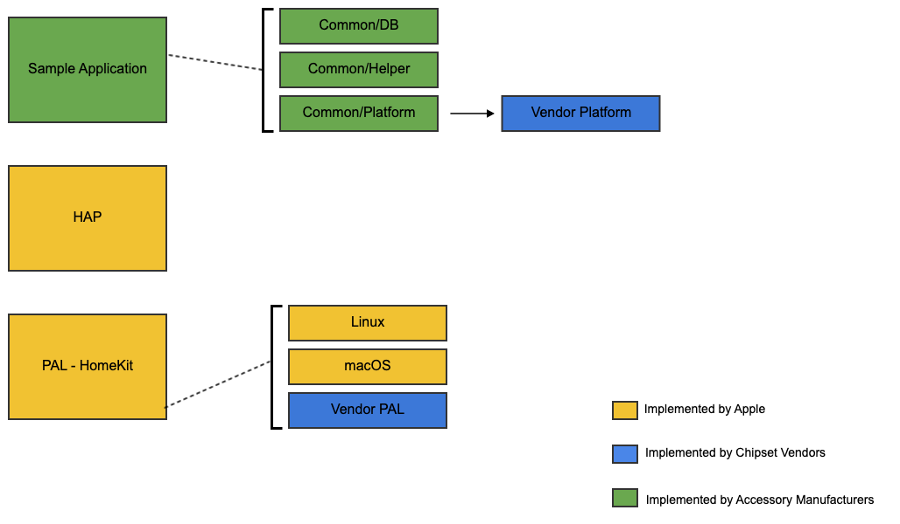

ADK Architecture¶
This section provides an overview of HomeKit ADK.

The ADK accessory consists of three major elements: the accessory logic, the HAP Library, and the PAL interface. The HAP Library implements the HomeKit Accessory Protocol. It is a software layer that resides between the accessory’s application layer software (e.g., control software for a ceiling fan) and the target platform (e.g., a custom-designed Linux device).
Accessory Logic¶
The accessory logic contains the application-layer code of an accessory. It is written by an accessory manufacturer, using their particular domain expertise, such as heating and cooling of rooms for thermostat accessories, or audio/video processing for IP camera accessories. The ADK contains samples for light bulb, thermostat, door lock, camera, HomeKit bridge accessories etc.
HAP Library¶
The HAP API, defined by Apple, allows developers to declare the services and characteristics of the accessory. After initialization of the target platform, the HomeKit accessory server which handles all HAP communication over IP, BLE or Thread can be started. When a request comes in (e.g., a request from an iPhone to change the set point of a thermostat) the HAP Library calls the suitable function pointers provided during the declaration of the services. As these calls go from the HAP Library “upwards” into the accessory logic, they are called upcalls. Upcalls issued by the HAP Library never overlap in order to avoid hard-to-find multithreading issues, to make it easy to integrate the HAP Library with other code, and to make the library usable even on “bare metal” systems without operating system and multithreading support. The HAP API is simple, and flexible enough to support custom characteristics and services in addition to the Apple-defined HomeKit profiles.
Apple provides an up-to-date implementation of the HAP Library. It implements the HAP pairing, session, and security protocols. The single-threaded design of the HAP Library makes it easy to integrate into different environments (e.g., into device software that already exists and uses a proprietary cloud service for data storage).
PAL Interface¶
The API of the Platform Abstraction Layer is defined by Apple but unlike the HAP API, it is not implemented by Apple. It is used by the HAP Library, and must be implemented in a PAL by a platform developer. The PAL API is highly modular and supports mechanisms including timers, persistent storage, random number generator, and more. It is designed to provide abstractions for every service that the HAP Library needs, in a way that enables easy implementation with minimal overhead.
Note
HomeKit ADK comes with sample Platform implementations for Linux, Raspberry Pi, nRF52 and macOS. Chipset vendors are expected to provide a platform implementation for their respective platforms. Sample PAL implementations cannot be assumed to be directly usable “as is”.
ADK RunLoop¶
All API functions of HAP and PAL must be called from the ADK run-loop thread only using the API HAPPlatformRunLoopScheduleCallback,
unless otherwise explicitly specified in the API documentation.
The following are the well known exceptions:
HAPLogmacros. The macros can be called from any thread.HAPAssert(),HAPPrecondition()andHAPFatalError().